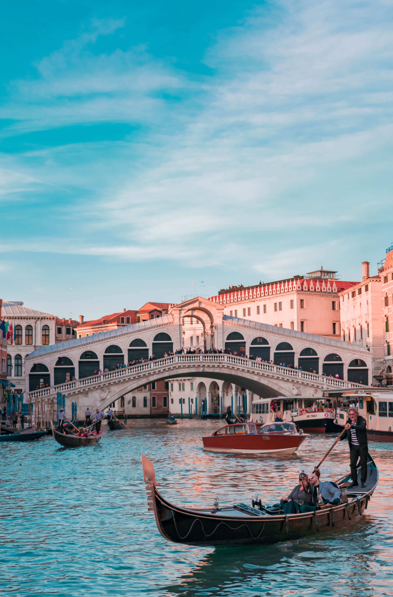

hello web strong man
몇 시간의 비행기를 탄 걸까.... 아침 2시에 자서 3시반에 깨고 다시 4시에 일어나 준비하고 첫차를 타고 9시비행기를 타고 로마로 출발했다. 이번에는 정말 부모님께 서운하게 해드린게 많았던거 같다. 왜일까.. 내가 너무 걱정이 없는 편인가 아니면 다른 사람의 걱정을 무시해서 일까.... 무론 참고는 하겠지만 많이 듣지 않았던건 사실이다. 나는 가볍게 갔다 오기를 바랬다. 이번에 생각을 많이 비우고 천천히 구경하고 싶었기 때문이다. 물론 부모님의 마음이 그렇지는 않지만 말이다.
나는 점심은 가족과 저녁은 누나와 함께 먹고 다시 10~11시 사이에 가족과 보내기를 바랬는데 평소에는 11시에도 술을 먹던 아빠가 삐져서 그날은 그냥 흐지부지 자버렸다. 솔직히 잘 모르겠다. 나는 만약에 건축을 위해 유학을 가라고 하면 갈 것이고 거기서 평생을 일 할 수도 있을 것 같다. 그러데 이런 부분을 나는 고치고 싶다. 일을 좋아하지만 일보다 사람을 좋아하고 싶다. 그래서 나는 누나의 그런 부분을 좋아하는 것 같다.
한국시간으로 3~4시, 여기시간으로 9시에 도착하였다. 다행이 좋은 사람들을 만나서 한번에 무사히 오게되었다. 사람들의 인연이라는게 참 신기하다. 인연이 아니면 만날려고 그렇게 노력을해도 만나지지 않지만 인연이 되면 만나지는게 사람인가보다. 이번에 문영이를 만나서 로마까지 재밌게 오고 또 숙소까지 친절한 사람들 덕에 한번에 무사히 오게 되었다. 여행의 묘미는 이런건가 보다. 새로운 사람들을 만나고 새로운 생각, 생활, 문화를 배우는 점은 정말 좋다. 너무 많이 자서 그런가 새벽에 잠이 깼다. 아침 산책을 한번 갔다 와야겠다.